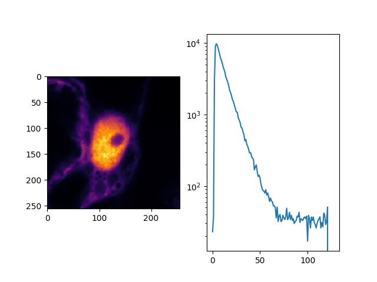

Note
Click here to download the full example code
Image construction¶
Below, using a few lines of python code it is outlined how CLSM images can be
constructured. For productive uses tttrlib provides a set of functions to
create images based on CLSM TTTR data implemented in C/C++. To describe how this
is actually implemented, it is outlined below in Python only using basic the basic
functionality of tttrlib. The presented outline presented below may serve to
understand how the image construction in CLSM work and is not intended for
productive use.
Before creating an image the channel numbers of the frame and the line markers need to be determined. For the example that is shown above the frame, line start, and line stop markers are 4, 1, and 2, respectively. Next, the TTTR data needs to be loaded into memory, the number of frames, and the number of lines need to be determined in order to allocate memory for the image. In CLSM the number of pixels per line can be arbitrarily defined, as the laser beam is continuously displaced and the fluorescence of the sample is continuously recorded. Hence, the main experimental determinants of the image size in memory are the number of frames and the number of line scans per frame. Usually, the number of line scans per frame is constant within a TTTR file.
The number of frames can be determined by counting extracting and counting the number of frame markers as shown below.
import tttrlib
import numpy as np
import pylab as p
def count_marker(channels, event_types, marker, event_type):
n = 0
for i, ci in enumerate(channels):
if (ci == marker) and (event_types[i] == event_type):
n += 1
return n
def find_marker(channels, event_types, maker, event_type=1):
r = list()
for i, ci in enumerate(channels):
if (ci == maker) and (event_types[i] == event_type):
r.append(i)
return np.array(r)
events = tttrlib.TTTR('./examples/PQ/HT3/PQ_HT3_CLSM.ht3', 1)
e = events.get_event_type()
c = events.get_routing_channel()
t = events.get_macro_time()
m = events.get_micro_time()
frame_marker_list = find_marker(c, e, 4)
line_start_marker_list = find_marker(c, e, 1)
line_stop_marker_list = initialize(c, e, 2)
n_frames = len(frame_marker_list) - 1 # 41
n_line_start_marker = len(line_start_marker_list) # 10246
n_lines_per_frame = n_line_start_marker / n_frames # 256
line_duration_valid = t[line_stop_marker_list] - t[line_start_marker_list]
line_duration_total = t[line_start_marker_list[1:]] - t[line_start_marker_list[0:-1]]
n_pixel = 256
pixel_duration = line_duration_valid // n_pixel
line_duration_valid = t[line_stop_marker_list] - t[line_start_marker_list]
Note
The channel number of the frame makers (here 4) depends on the experimental setup. Moreover, some setup configurations use “photons” event types to record special events. Different microscopes may use different markers. For common microscopes such as the Leica SP5 and Leica SP8 ready-to-use image processing routines are provided.
In the example above, first the number of frames are counted. Next, the number of
start line events are counted. In the example, there are overall 41 frames are present
in the file each having 256 lines. As the last frame is often incomplete (see Figure
above) the last frame is neglected (41 - 1 = 40). With the script above, the number
of frames n_frames and the number of lines per frame n_lines_per_frame is
determined. Next, the number of pixel per line n_pixel can be freely defined.
Based on the time the laser spends in each line, the duration per pixel (the laser
is constantly scanning) needs to be calculated. Here, there are two options: 1)
either the total time from the beginning of each new line (line start) to the beginning
of the next line is considered as a line or 2) the time between the line start and
the line stop is considered as the time base to calculate the pixel duration. In
the first case, the back movement of the laser to the line start can be visualized
in the image. In the later case, only the valid region where the laser scans over
the sample is visualized. For most applications the later approach is useful. To
understand the microscope laser scanner the former approach is more useful. Above,
line_duration_valid is the time the laser spends in every of the lines in a
valid region and line_duration_total is the total time the laser spends in a
line including the rewind to the line beginning. Above, n_pixel is the freely
defined number of pixels per line and pixel_duration is the duration of every
pixel. With the number of frames n_frames, the number of pixels n_pixel,
and the number of lines n_lines_per_frame it is clear how much the memory for
an image needs to be can be allocated and with the defined number of pixels per
line the duration for the pixel can be calculated for all the lines of the frames.
With these numbers an image for a certain set of detector channels detector_channels
can be calculated. Below this is by the function make_image.
def make_image(
c, m, t, e,
n_frames, n_lines_per_frame, pixel_duration,
channels,
frame_marker=4,
start=1,
stop=2,
n_pixel=None,
tac_coarsening=32,
n_tac_max=2**15):
if n_pixel is None:
n_pixel = n_lines_per_frame # assume squared image
n_tac = n_tac_max / tac_coarsening
image = np.zeros((n_frames, n_lines_per_frame, n_pixel, n_tac))
# iterate through all photons in a line and add to image
frame = -1
current_line = 0
time_start_line = 0
invalid_range = True
mask_invalid = True
for ci, mi, ti, ei in zip(c, m, t, e):
if ei == 1: # marker
if ci == frame_marker:
frame += 1
current_line = 0
if frame < n_frames:
continue
else:
break
elif ci == start:
time_start_line = ti
invalid_range = False
continue
elif ci == stop:
invalid_range = True
current_line += 1
continue
elif ei == 0: # photon
if ci in channels and (not invalid_range or not mask_invalid):
pixel = int((ti - time_start_line) // pixel_duration[current_line])
if pixel < n_pixel:
tac = mi / tac_coarsening
image[frame, current_line, pixel, tac] += 1
return image
image = make_image(c, m, t, e, n_frames, n_lines_per_frame, pixel_duration,
channels=np.array([0, 1])
)
In the example function make_image the an 3D array is created that contains in
every pixel a histogram of the micro times. An histogram of the micro time can be
displayed by the code shown below:
fig, ax = p.subplots(1, 2)
ax[0].imshow(image.sum(axis=(0, 3)), cmap='inferno')
ax[1].plot(image.sum(axis=0)[175,128])
p.show()
The outcome of such analysis for a complete working example is shown below including all necessary source code is here.
For any practical applications it is recommended the determine the images using
the built-in functions of tttrlib. Using this functions is illustrated below.

import tttrlib
import numpy as np
import pylab as p
import numba as nb
@nb.jit(nopython=True)
def count_marker(channels, event_types, marker, event_type):
n = 0
for i, ci in enumerate(channels):
if (ci == marker) and (event_types[i] == event_type):
n += 1
return n
@nb.jit(nopython=True)
def find_marker(channels, event_types, maker, event_type=1):
r = list()
for i, ci in enumerate(channels):
if (ci == maker) and (event_types[i] == event_type):
r.append(i)
return np.array(r)
@nb.jit(nopython=True)
def make_image(
c, m, t, e,
n_frames, n_lines, pixel_duration,
channels,
frame_marker=4,
line_start=1,
line_stop=2,
n_pixel=None,
tac_coarsening=32,
n_tac_max=2**15):
if n_pixel is None:
n_pixel = n_lines # assume squared image
n_tac = int(n_tac_max // tac_coarsening)
image = np.zeros(
(int(n_frames), int(n_lines), int(n_pixel), int(n_tac)),
dtype=np.uint16
)
# iterate through all photons in a line and add to image
frame = -1
current_line = 0
time_start_line = 0
invalid_range = True
mask_invalid = True
for i in range(len(c)):
ci, mi, ti, ei = c[i], m[i], t[i], e[i]
if ei == 1: # marker
if ci == frame_marker:
frame += 1
current_line = 0
if frame < n_frames:
continue
else:
break
elif ci == line_start:
time_start_line = ti
invalid_range = False
continue
elif ci == line_stop:
invalid_range = True
current_line += 1
continue
elif ei == 0: # photon
in_channels = False
for v in channels:
if v == ci:
in_channels = True
if in_channels and (not invalid_range or not mask_invalid):
pixel = int((ti - time_start_line) // pixel_duration[current_line])
if pixel < n_pixel:
tac = mi // tac_coarsening
image[frame, current_line, pixel, tac] += 1
return image
events = tttrlib.TTTR('../../test/data/imaging/pq/ht3/pq_ht3_clsm.ht3', 1)
e = events.get_event_type()
c = events.get_routing_channel()
t = events.get_macro_time()
m = events.get_micro_time()
frame_marker_list = find_marker(c, e, 4)
line_start_marker_list = find_marker(c, e, 1)
line_stop_marker_list = find_marker(c, e, 2)
n_frames = len(frame_marker_list) - 1 # 41
n_line_start_marker = len(line_start_marker_list) # 10246
n_lines = n_line_start_marker // n_frames # 256
line_duration_valid = t[line_stop_marker_list] - t[line_start_marker_list]
line_duration_total = t[line_start_marker_list[1:]] - t[line_start_marker_list[0:-1]]
n_pixel = 256
pixel_duration = line_duration_valid // n_pixel
line_duration_valid = t[line_stop_marker_list] - t[line_start_marker_list]
image = make_image(
c, m, t, e,
n_frames,
n_lines,
pixel_duration,
channels=np.array([0, 1]),
tac_coarsening=256
)
fig, ax = p.subplots(1, 2)
ax[0].imshow(image.sum(axis=(0, 3)), cmap='inferno')
ax[1].semilogy(image.sum(axis=(0, 1))[128])
p.show()
Total running time of the script: ( 0 minutes 2.482 seconds)